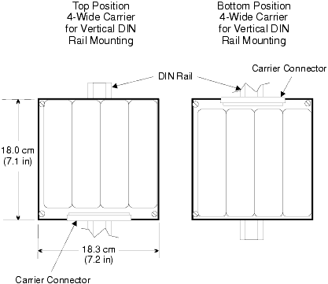
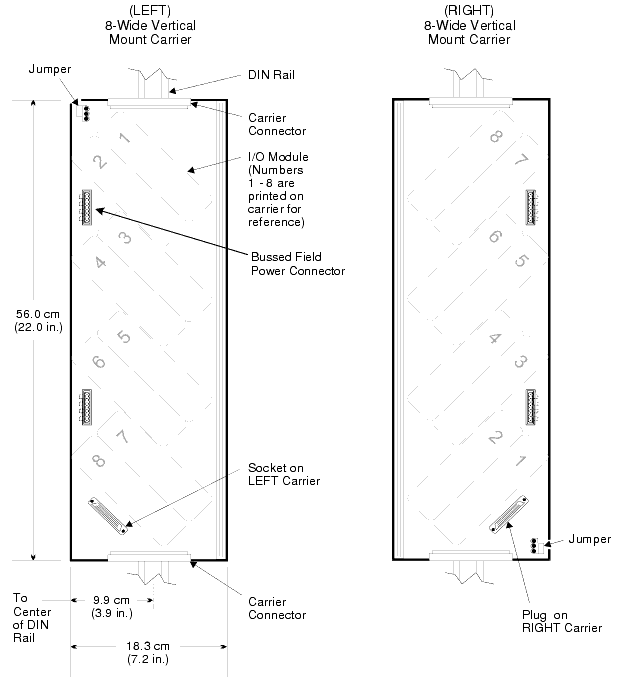

Source: DeltaV M-series Hardware Installation and Reference Manual, Emerson D800001X312, April 2021 — Appendix M


| Feature | VerticalPLUS | Legacy Vertical |
|---|---|---|
| SIS Support | Yes | No |
| DIN Rail Type | 35 mm T-type | 35 mm T-type or G-type |
| LocalBus Max Length | 6.5 m (21.3 ft) — includes all cabling | |
| Orientation Notes | Left/right, top/bottom assume facing the equipment | |
| Proper Mounting | Lettering must be in the upright position | |
KJ4010X1-BS1.
| Attribute | Detail |
|---|---|
| Capacity | Up to 2 controllers (primary + secondary) and 2 system power supplies |
| Position in System | Top left of vertical system |
| Bottom Connector | 96-pin connector — connects to top of a left 8-wide I/O interface carrier |
| SIS Support | Yes |
| Attribute | Detail |
|---|---|
| Capacity | Primary and secondary SISNet Repeater |
| Position in System | Top right of vertical system |
| Bottom Connector | 96-pin connector — connects to top of a right 8-wide I/O interface carrier |
| Connectors | D-shell (for power extension) and BNC (for local peer bus signals/termination) |
| Attribute | Detail |
|---|---|
| Capacity | Redundant power supplies for additional system power |
| Position | Anywhere on the DIN rail in the cabinet |
| DC Reference Ground | Required for legacy 24 VDC bulk power supply only; not required for 12 VDC |
| Attribute | Detail |
|---|---|
| Capacity | I/O cards and Logic Solvers |
| Power Connectors | System power and field power insertion points |
| Types | Left 8-wide and Right 8-wide (mirror-image pin layout) |
| Addressing | Positions assigned sequentially from controller outward |
Used to extend power and LocalBus signals between left and right 8-wide carriers on separate DIN rails.
| Component | Function |
|---|---|
| Left 1-wide extender | Connects to bottom of left 8-wide carrier or top of right 8-wide carrier |
| Right 1-wide extender | Connects to bottom of right 8-wide carrier or top of left 8-wide carrier |
| 25-pin D-shell cable | Extends power and LocalBus signals (five lengths available) |
| BNC cable | Extends local peer bus signals for SIS systems |
| Length (m) | Length (ft) |
|---|---|
| 0.4 | 1.3 |
| 0.8 | 2.6 |
| 1.1 | 3.6 |
| 1.5 | 4.9 |
| 1.9 | 6.2 |
| Step | Action | Notes |
|---|---|---|
| 1 | Verify the arrow on the stop front points upward toward the device | Downward arrows risk screw damage to device pins |
| 2 | Hook the deeper-notched end over one side of the DIN rail, then hook the shallower notch over the other side | — |
| 3 | Screw the stop onto the DIN rail — do not overtighten | Both sides must be properly secured; observe torque limits |
Installation Procedure:
| Step | Action |
|---|---|
| 1 | Position carrier on DIN rail and push to snap into place |
| 2 | Slide carrier down until it meets the DIN rail stop |
| 3 | Snap next carrier onto the DIN rail |
| 4 | Connect adjacent carriers by sliding pins together |
| 5 | Connect ground wiring (one ground wire per group of carriers on a DIN rail) |
Removal Procedure:
When VerticalPLUS carriers are on separate DIN rails, carrier extender cables extend LocalBus power through 1-wide VerticalPLUS carrier extenders.
| Step | Action |
|---|---|
| 1 | Connect left 1-wide extender to last 8-wide carrier on left side (carrier 3) via 96-pin connectors |
| 2 | Connect right 1-wide extender to first 8-wide carrier on right side (carrier 4) via 96-pin connectors |
| 3 | Connect 25-pin D-shell cable to D-shell connector labeled A on left extender; fasten retainer screws |
| 4 | Connect other end of D-shell cable to D-shell connector labeled A on right extender; fasten retainer screws |
| Step | Action |
|---|---|
| 1 | Connect left 1-wide extender (or SISNet Repeater carrier) to last carrier on right side (carrier 6) |
| 2 | Connect right 1-wide extender to first carrier on left side (carrier 7) |
| 3 | Connect 25-pin D-shell cable to D-shell labeled A on right extender/SISNet Repeater |
| 4 | Connect other end to D-shell labeled A on left extender; fasten screws |
When the total power draw exceeds the power supply's capability at a given position:
| Terminals | Connection |
|---|---|
| Center terminal | + (positive) 12 VDC |
| Negative terminal | – (negative) |
The bussed field power connectors on VerticalPLUS carriers differ from horizontal and Legacy Vertical carriers. Key principles:
| Principle | Detail |
|---|---|
| Max Current per Connection | 13 A |
| Voltage Matching | Extended field power must match the same field voltage requirements |
| Factory Jumpers | Must be removed when powering only one I/O card per supply |
| Adjacent 250 VAC Sources | Must be the same phase |
| Terminals 1–4 | Terminals 5–8 |
|---|---|
| + Field Power connections | – Field Power connections |
| Configuration | Jumpers | Notes |
|---|---|---|
| One power supply per I/O card (redundant cards) | Removed | Ensure factory jumpers are removed |
| One power supply per two I/O cards | Installed between card positions | Add jumper wires to extend power |
| One power supply per four I/O cards | Installed across four positions | Optional wires extend to next connector slots |
| Type | Details |
|---|---|
| Top 4-wide Power/Controller | Connects to left 8-wide I/O carrier; 96-pin connector at bottom; holds cards 1-8 (top to bottom) |
| Bottom 4-wide Power/Controller | Connects to right 8-wide I/O carrier; 96-pin connector at top; holds cards 8-1 (top to bottom) |
| Left 8-wide I/O Interface | Card positions 1–8 from top to bottom |
| Right 8-wide I/O Interface | Card positions 8–1 from top to bottom |
| Cable | Length | Purpose |
|---|---|---|
| Bottom cable extender | 1 meter (39.37 in.) | Left → Right carrier at bottom of DIN rails |
| Top cable extender | 2 meters (78.74 in.) | Right → Left carrier at top of DIN rails (bridge) |
The 8-wide Legacy Vertical I/O carriers have a split high-side power plane with a shared common return plane. A jumper bridges both high-side planes. To add power:
Each carrier (C1–C8) = 22 inches. Carriers C6 and C7 are spurs (not counted in series length).
| Carrier End | Path Calculation | Total Length |
|---|---|---|
| C6 | C1 + C2 + C3 + 1m + C4 + C5 + C6 | 14.3 ft |
| C7 | C1 + C2 + C3 + 1m + C4 + C5 + 2m + C7 | 20.8 ft |
| C8 | C1 + C2 + C3 + 1m + C4 + C5 + 2m + C8 | 20.8 ft |
| Topic | Key Point |
|---|---|
| DIN Rail Stop | Part #KJ4010X1-BS1; install at lowest position before carriers |
| VerticalPLUS vs Legacy | VerticalPLUS supports SIS; Legacy does not |
| LocalBus Max Length | 6.5 m (21.3 ft) — includes all cabling |
| Power jumper removal | Kills all 12 VDC to downstream cards |
| Bussed field power limit | 13 A per connection on VerticalPLUS |
| Legacy cable types | 1m bottom (L→R) and 2m top (R→L) — wrong cable = corrupt addressing |
| Spur rule | No additional carriers on spurs; corrupts addressing |
1. What is the maximum LocalBus length for both vertical and horizontal DeltaV systems?
6.5 m (21.3 ft), including all cabling.
2. Why must a DIN rail stop be installed before mounting vertical carriers?
Vibration causes vertical carriers to slip down the DIN rail, disconnecting from the carrier above. The stop prevents this slippage.
3. What happens when you remove a power jumper on a VerticalPLUS carrier?
All 12 VDC power is removed from all cards on all downstream carriers. Cards are unable to hold their last value.
4. In a Legacy Vertical system, why must you use the correct cable type (1m vs 2m)?
Using the wrong cable results in a corrupt addressing scheme. The 1m bottom cable connects left-to-right carriers at the bottom; the 2m top cable bridges right-to-left carriers at the top.
5. What is the significance of carriers C6 and C7 in an 8-carrier Legacy Vertical system length calculation?
They are spurs, not in series with the rest of the system. Their lengths are not counted in the overall LocalBus length calculation, but spur lengths must be ≤ total system length. No additional carriers may be connected to spurs.
Pages referenced: 495–526